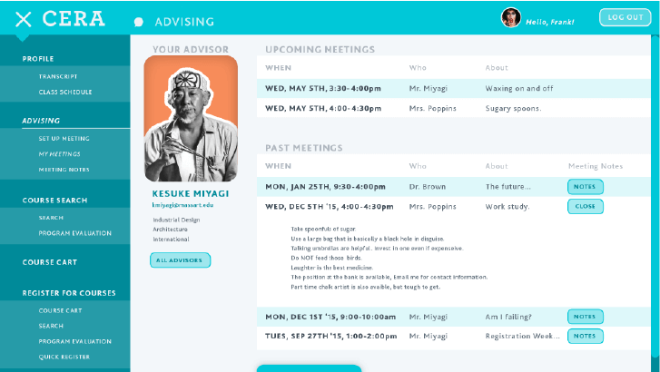
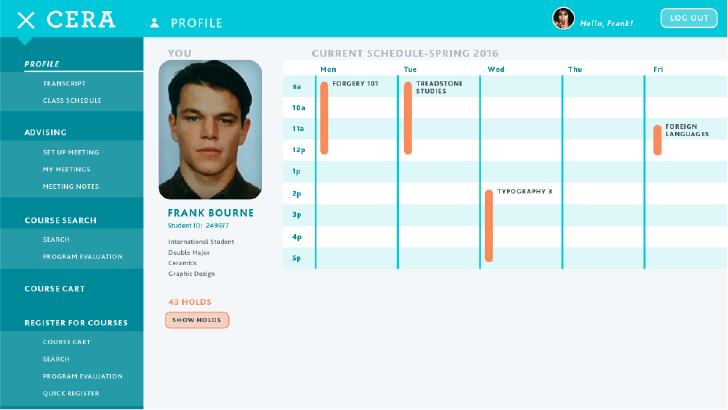
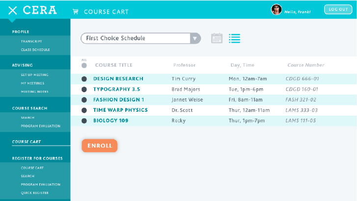

<!DOCTYPE HTML>
<html lang="en">
<head>
	<meta charset="UTF-8">
	<meta name="viewport" content="width=device-width, initial-scale=1">
	<title>CERA</title>
	<link rel="stylesheet" href="style.css" type="text/css" media="screen">
	<link href="https://fonts.googleapis.com/css?family=Raleway:200,300,400,700" rel="stylesheet">
</head>
<body>


<div id="sidenav">
	<div id="sidenavscrollable">
		<a href="index.html"></a>
		<a href=""><h1>Graphic Design Projects</h1></a>
			<a href="" class="gdproj"><h2>The Marvel Cinematic Universe</h2></a>
			<a href="" class="gdproj"><h2>Zombies</h2></a>
			<a href="nolan.html" class="gdproj"><h2>Christopher Nolan DVD box set</h2></a>
			<a href="" class="gdproj"><h2>Letters of Ignorance</h2></a>
			<a href="cera.html" class="gdproj"><h2>CERA</h2></a>
			<a href="wayne.html" class="gdproj"><h2>Wayne Enterprises</h2></a>
			<a href="http://www.luciac.github.io/portfolio/typeface" class="gdproj"><h2>Danger-Retro Typeface</h2></a>
			<a href="" class="gdproj"><h2>The Mustache App</h2></a>
			<a href="1950.html" class="gdproj"><h2>1950's Trivia Game</h2></a>
			<br>
		<a href=""><h1>Design Side Notes</h1></a>
		<a href=""><h1>Illustration</h1></a>
		<a href="about.html"><h1>About Me/Contact</h1></a>
	</div>
</div>

<div id="greymodal"></div>


<div id="burger" class="burger">
	<div class="bar one"></div>
	<div class="bar two"></div>
	<div class="bar three"></div>
</div>

<div id="mobilenav" class="scrolling">	
	<a href="index.html"></a>
</div>


<div id="bodycontainer" class="project scrolling">
	
	<h1>CERA (college enrollment / registration assistant)</h1>
	<div class="header">
		
	</div>

	
	<div id="test" class="body">
		<h2>about CERA</h2>
		<p>CERA is a full system designed to help students through the enrollment process to eliminate any hickups and stress for students. The system includes an advisory center, a handbook available digitally as well as printed, and an online platform. The design of the entire system was derived from careful research of several students in seven colleges in different parts of the USA, as well as taking a close look at the registration system at my own school, MassArt.</p>
		<h2>the many faces of ‘retro danger’</h2>
		<p>Although designed for old construction/road signage, it still fits in with different styles of design. Its bold and rigid structure works just as well outisde its original era in far more modern design. Retro Danger is a perfect display typeface for dramatic and bold headlines.</p>
		
		<div class="touchpoints">
			<div class="touchpoint"></div>
			<div class="touchpoint"></div>
			<div class="touchpoint"></div>
		</div>

		<h2>the three cornerstones</h2>
		<p>There are three major touchpoints of the CERA system. Colleges are full of students from countless different backgrounds, experiences, and learning styles. The design and planning of each touch point is meant to cover this wide variety of students’ needs. Independent students and far away commuters can simply use the online portal and achieve all their needs. Hands on students that prefer an in person touch or want a knowledgable opinion can visit the advising center. No student will get turned away without answers. Any students new to their college that need a quick reference about registration and program path can take the CERA handbook with them.</p>
		<h2>the facts and advising</h2>
		<p>This system arose from the frustration I personally felt, along with the majority of my fellow students, towards the registration process in its entirety. My advisors were not actually advisors. They were just professors, who didn’t really have the time to truly sit down and iron out my issues towards graduation. They had several meetings to go to, projects to grade, presentations to prepare and edit, personal lives to get to, for some teaching wasn’t their only job. Along my research I had conversations with several professors who served as advisors. I had some admit that had being an advisor been optional they would have elected to not be one. The advising process before enrollment was a mess. Through my interviews with students I had one poor sophmore soul tell me their advisor would continuously call them by the wrong name, and giving them advice for the wrong major. This had to be fixed.
		<br><br>
		Research conducted revealed that MassArt’s registration process was the worst case scenario for students across the board. </p>
		
		<div class="cerafacts">
			<div class="percentages">
				
				<p>of MassArt students had a negative registration experience</p>
			</div>
			<div class="percentages">
				
				<p>of MassArt students had problems with advising.</p>
			</div>
			<div class="percentages">
				
				<p>of MassArt students had problems with the online portion</p>
			</div>
		</div>

		<p>MassArt students had a measurably horrible time trying to meet and meeting their advisors. “My advisor looses her notes of me and tells me to ask for other advisors for help.” recounted a MassArt Sophomore. Few got the help they needed. Nearly all MassArt students had  a measurably horrible time handling the online portal. Outside of those two things, there was barely any paperwork or information that was readily availble for students that needed help on the go.
		<br><br>
		The interesting thing discovered was that as miserable as MassArt students were, students from Oklahoma Community College using the same online platform as MassArt. They were extremely happy with the entire process. Why? Their advisory system was golden. Advisors were so helpful that most of them didn’t even need to touch the online portion much at all, so the disaster was avoided. But with CERA I don’t want bandaids or golden ducttape to avoid disasters. I want no disasters. Everything can and should run smoothly. With the reorganization of the structure of most online platforms, and the careful structuring of a good advisory center, registration can be a sigh or releif rather than living nightmare.
		<br><br>
		The solution is to fully utilize the academic advisor center rather than resort to having faculty advisors to propel students’ education  further. The majority of of academic advisors would be full-time staff. They would be specifically trained to handle all majors, cross-registration, dual majors, international students and more. Depending on the size of the college or university certain staff would be specialized for certain majors, situations, or colleges within a university. Having the right guideance throughout a student’s years in higher education can make a difference between graduating and not graduating. No student should face the prospect of not graduating because their advisor wasn’t trained to understand their program track.</p>
		<h2>going online</h2>
		<p>Going online was also a mess. The UX of using MassArt’s online platform was horribly messy, misleading, and annoying. In researching, a survey was sent out to over 70 students in 7 colleges ranging from freshman to transfered super seniors. The results were overwhelmngly negative from MassArt, my school. “Painful, too many steps, not intuitive” A MassArt Junior said about using the online platform. That seemed to be a universal feeling towards registering online. Or doing anything online in general. Oklahoma Community College students, that used the same portal, were only happy because they could avoid using it. 
		<br><br>
		The biggest mistake in a lot of online platforms to REAL WORLD SITUATION ACTIONS SERVICES is to separate them completely from their real world counterparts. Not only should the online platform be well organized, helpful, and easy to navigate; it should also be a tool to be used by the advising center. Both are part of the same system. Two ingredients of a whole. They should interact, they should help eachother, not exist separately. </p>
		<div class="cerascreenshots">
			
			
		</div>
		<p>Several students go around their semesters not knowing who their advisor is. With CERA the advising center tells you front and center who they are, how to contact them, and what their specialities are. You can set up a meeting online, see when your advisor is busy or available for meetings, and set up reminders. After meetings are concluded your advisor can log all the meeting notes onto the portal for both of you to refer to.</p>
		<div class="cerascreenshots">
			
			
		</div>
		<p>The student profile immediately shows the current class schedule, your student ID major, how many holds you have on your account, and the majors you are currently enrolled in. I have witnessed many frantic students scrambling to find their class schedules throughout the first weeks of class. Now its the first thing they’ll see. The transcript is easy to find and well organized to see how you’ve been progressing so far.</p>
		<div class="cerascreenshots">
			
			
		</div>
		<p>The biggest pro of this portal is having a “course cart”. Some colleges already allow this but not all. Having gone to a college that uses this system and one that doesn’t, I have felt its benefits and greatly mourned the loss of them. Having to manually punch in all the classes you want to enroll in each semester one by one on registration day along side hundreds of students, is an absolute living stress nightmare. CERA allows multiple course carts. Now students can have a primary choice schedule and secondary even tirciary back up schedules just in case their first choice gets filled. 
		<br><br>
		Most important of all is that CERA is 100% responsive unlike a majority of school’s antiquated systems. Commuter students no longer need to cry. They can register on the go wherever they have service.</p>
		<div class="handbook">
			<div class="main"></div>
			<div class="main"></div>
		</div>
		<h2>the handbook</h2>
		<p>Finally there is a handbook for students that need an extra guiding hand and can’t drag an advisor with them everywhere they go. It gives a breakdown of CERA.com for any students who feel lost, a breakdown of a basic freshman year requirement, credit requirements for graduation for all majors, basic information about transfer students, international students, double majors, switched majors, and a rundown of the advising center. A small, information packed QUICK HANDY CONVENIENT guide for any student at any time. They will be available online and in the schools.</p>


	</div>

</div>


<script src='https://code.jquery.com/jquery-2.1.3.js'></script>
<script src='http://cykod.github.io/ScrollFlight/scroll_flight.js'></script>
<script src="brotatochip.js"></script>


</body>
</html>

